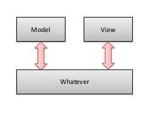

¿Qué es "La Piedra Angular"?
- Es la base de la construcción de un edificio.
- Ubica geográficamente la construcción.
- Se dice que es la piedra más importante, ya que sobre ella se colocan los demás elementos de la construcción.
- "Lo que otros desecharon, ha venido a ser cabeza del ángulo" -- Salmo 118:22
- Y así, hay muchas creencias que giran en torno a este concepto...
Algunas respuestas...
Angular.js es...
- Un framework MV*
- Hecho por Google©
- ¿super-heróico?
- Orientado a Front-end.
- 100% Javascript.
- De sintaxis específica (opinionated).

¡Vas muy rápido!
¿Qué sabemos?
- Javascript.
- Patrones de Diseño.
- Arquitectura.
- Prototipado.
- Desarrollo Orientado a Pruebas.
Javascript
- Interpretado y funcional
- Del navegador Web
- Orientado a Objetos
- Basado en Prototipos
- Débilmente Tipado
- Duck types, o tipado dinámico
- Imperativo
- Funciones variádicas
Patrones de Diseño Modulares
- Envoltorios anónimos
- Scopes o múltiples alcances globales
- Augmentation, o crecimiento desmesurado
- Espaciado de nombres
- Clonación y Herencia
- Injección de Dependencias
Arquitectura
- Monolítica
- Descomposición Modular
- Cliente-Servidor
- Pizarra
- Bus-Service
- Tres capas:
- MVC (Modelo-Vista-Controlador)
- MVT (Modelo-Vista-Template)
- MOV (Modelo-Observador-Vista)
- MV* (Modelo-Vista-*)
Prototipado
- Un objeto posee atributos y métodos. Un prototipo sólo posee argumentos.
- La cantidad de argumentos pueden ser modificados por sí mismos en un prototipo (Polimorfismo)
- Permite herencia múltiple y clonación, tanto de argumentos, como de prototipos
- Un prototipo es siempre global (
rootScopeo contexto principal) dentro del módulo en el que se crea - De todos los conceptos de OOP se pueden sacar prototipos
- No existe encapsulamiento de prototipos
Desarrollo Orientado a Pruebas
Un framework MV*
datos--->
<---interfaz
"cualquier cosa"
Hecho por Google©
¿súper heróico?
Angular.js permite...
- Mocking (prototipado rápido de UX)
- Auditabilidad E2E (End to End)
- Arquitecturas desacopladas
- Integración directa con HTTP
- AJAX Nativo
- Manipulación transversal del DOM ¡sin jQuery!
- Desarrollo de SPA (Single Page Applications)
- Acoplamiento con cualquier framework de desarrollo web
(CodeIgniter, Yii, Django, Ruby on Rails, etc.)
Orientado a Front-end
100% Javascript
- No necesitas aprender otro lenguaje de programación
- HTML5 y CSS3 deseable (no limitativo)
- Aplicaciones híbridas
- Responsivo por defecto
De sintaxis específica (opinionated):
¡En Angular.js, TODO es un módulo!, y hay módulos...
- ... para manipular comportamientos (directivas)
- ... para compartir datos entre componentes (fábricas)
- ... para crear interfaces de acceso a componentes (servicios)
- ... para encapsular comportamientos (controladores)
- ... para separar acceso a datos (rutas)
- ... muchas cosas más.
Para mayor información:
- Página principal de Angular.js
- API de Angular.js (version = 1.3.20)
- Curso de Angular.js en Código Facilito ( ;) )
- Mi blog ~('.'~)
- Google... (¬¬')
¿Que vamos a hacer?
- JSON (JavaScript Object Notation).
- Algunas directivas básicas ~ intermedias.
- Two Data-binding.
- Controladores.
- Rutas.
- $http y peticiones AJAX.
- Test unitarios con Protractor Framework.
- Construir un Mocking de API RESTful.
¡Manos a la ubre!